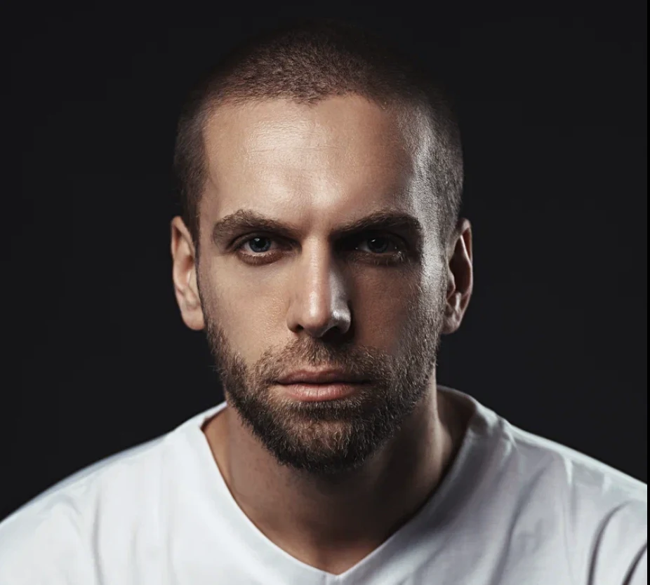

810 слов, которые нужны актёру и модели в Южной Корее
27 уроков по 30 слов: от «hello» до контракта
Подсказка, как читается, и озвучка каждого слова
Отмечай выученное, прогресс сохранится
Выучено 0 из 810

Выучено 0 из 810